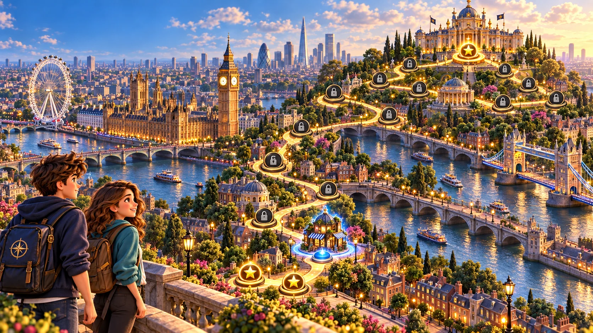

PRIME TWO
Mission Map
Progress: 0 / 15
🇺🇸 EN
≡ Back to map
House complete!
Return to map
📱↻
Rotate your device · Gira tu dispositivo
The map looks best in landscape · El mapa se ve mejor en horizontal